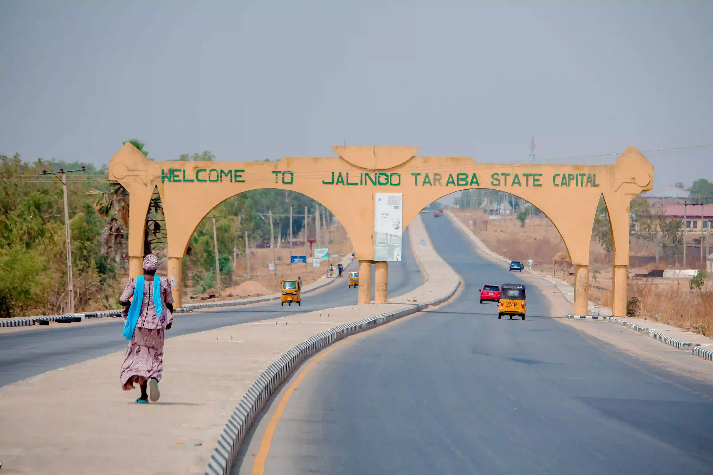

Mambilla Plateau
The Mambilla Plateau is known for its high elevation, cool climate, green hills, tea plantations, and scenic mountain landscapes.
Taraba

Nature's gift to the nation
Jalingo is the capital of Taraba State in northeastern Nigeria. The city is surrounded by a landscape of savanna, farmland, hills, and river valleys that give the state its distinctive natural beauty.
I would like to visit Jalingo because it offers an opportunity to experience a different part of Nigeria and explore the beautiful landscapes and diverse cultures of Taraba State. Beyond the capital, visitors can discover the Mambilla Plateau, Gashaka-Gumti National Park, and other natural attractions.
The Mambilla Plateau is known for its high elevation, cool climate, green hills, tea plantations, and scenic mountain landscapes.
One of Nigeria's major protected natural areas, the park contains forests, mountains, rivers, and a wide variety of wildlife.
Chappal Waddi is located in the Mambilla region of Taraba State and is known for its dramatic mountainous landscape and high elevation.
Jalingo, Taraba — typical conditions